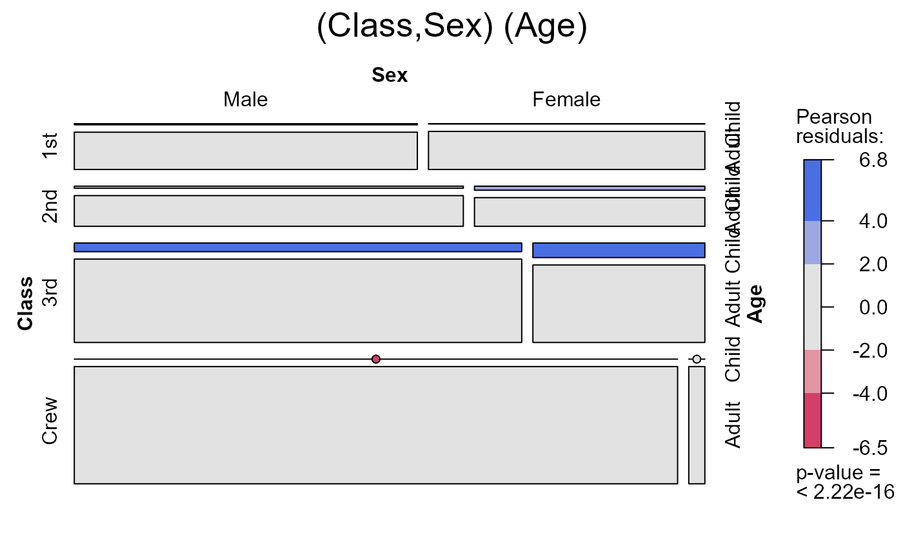
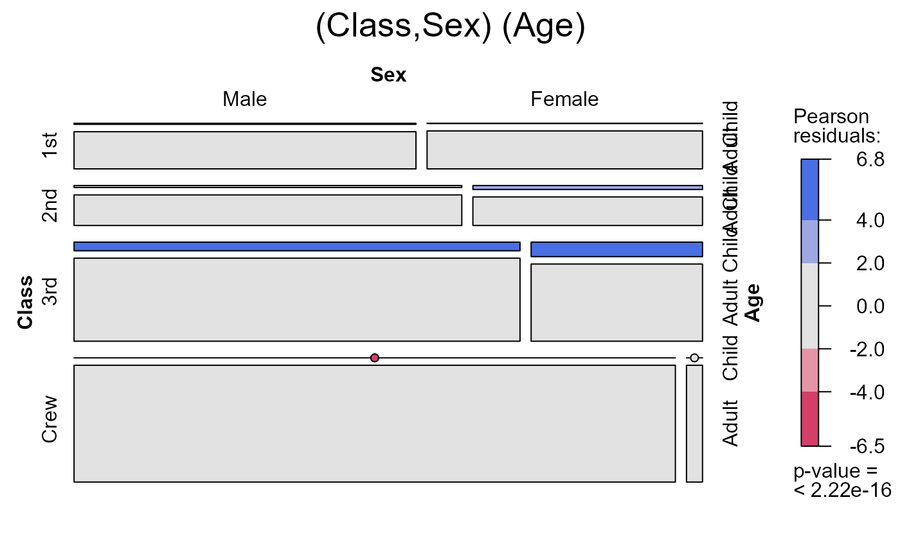
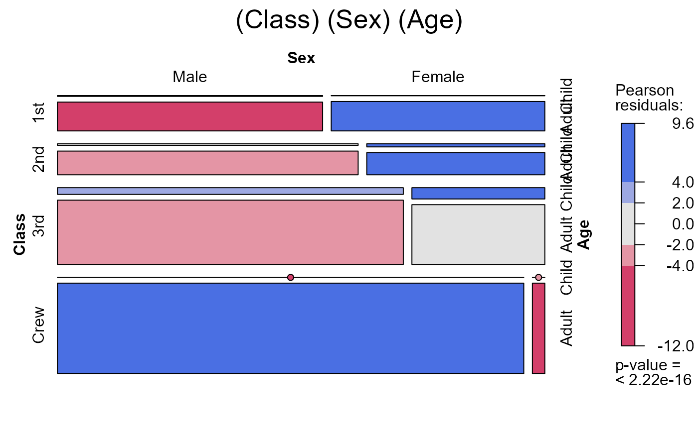
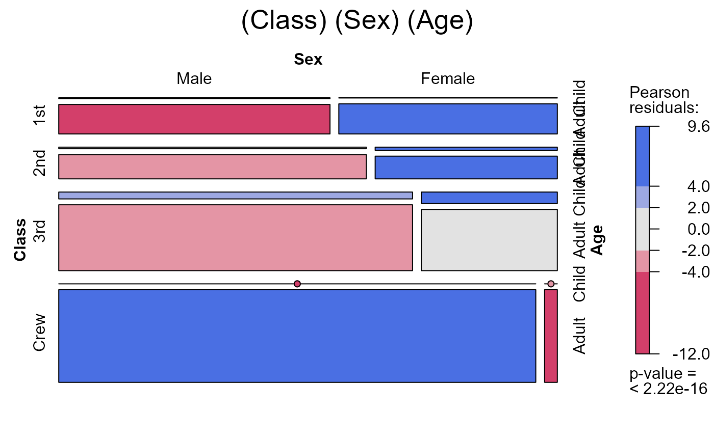

Sequential Mosaics and Strucplots for an N-way Table
seq_mosaic.RdThis function takes an n-way contingency table and plots mosaics for series of sequential models to the 1-, 2-, ... n-way marginal tables, corresponding to a variety of types of loglinear models.
Usage
seq_mosaic(x, panel = mosaic,
type = c("joint", "conditional", "mutual", "markov", "saturated"),
plots = 1:nf, vorder = 1:nf,
k = NULL, ...)Arguments
- x
a contingency table in array form, with optional category labels specified in the dimnames(x) attribute, or else a data.frame in frequency form, with the frequency variable named
"Freq".- panel
a
strucplotpanel function, typicallymosaicorsieve. NOT yet implemented.- type
type of sequential model to fit, a character string. One of
"joint","conditional","mutual","markov", or"saturated".- plots
which marginal sub-tables to plot? A vector of a (sub)set of the integers,
1:nfwherenfis the number of factors in the full n-way table.- vorder
order of variables, a permutation of the integers
1:nf, used to reorder the variables in the original table for the purpose of fitting sequential marginal models.- k
conditioning variable(s) for
type="joint","conditional"or Markov chain order fortype="markov"- ...
other arguments passed to
mosaic.
Details
This function produces
similar plots to the use of mosaic.loglmlist,
called with the result of seq_loglm.
References
These functions were inspired by the original SAS implementation of mosaic displays, described in the User's Guide for Mosaics, http://www.datavis.ca/mosaics/mosaics.pdf
See also
loglin-utilities for descriptions of sequential models,
conditional,
joint,
mutual, ...
loglmlist, mosaic.loglmlist,
seq_loglm
mosaic.glm, mosaic,
strucplot, for the many parameters that control the details of mosaic plots.
Examples
data(Titanic, package="datasets")
seq_mosaic(Titanic) # models of joint independence, Survived last

 

 seq_mosaic(Titanic, type="condit")
seq_mosaic(Titanic, type="condit")


 seq_mosaic(Titanic, type="mutual")
seq_mosaic(Titanic, type="mutual")

 
# other panel functions and options: presently BUGGED
if (FALSE) { # \dontrun{
seq_mosaic(Titanic, type="mutual", panel=sieve,
gp=shading_Friendly, labeling=labeling_values)
} # }

# other panel functions and options: presently BUGGED
if (FALSE) { # \dontrun{
seq_mosaic(Titanic, type="mutual", panel=sieve,
gp=shading_Friendly, labeling=labeling_values)
} # }